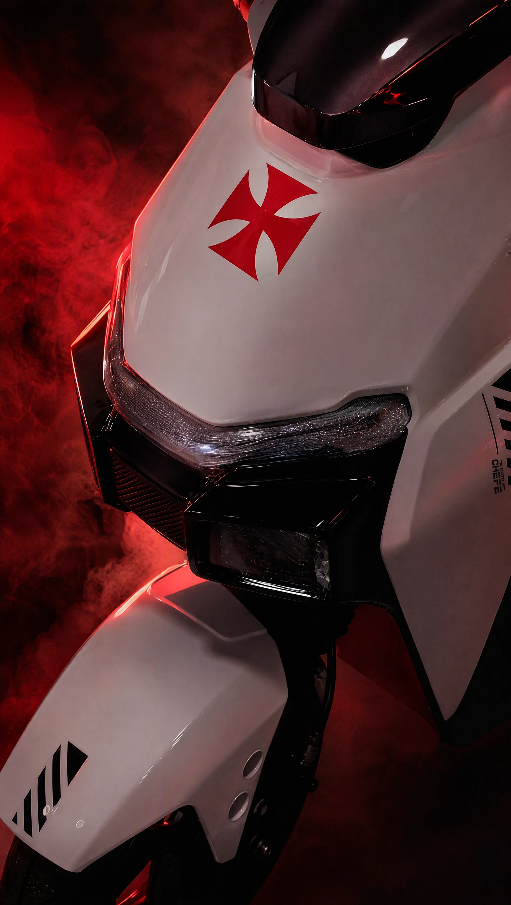
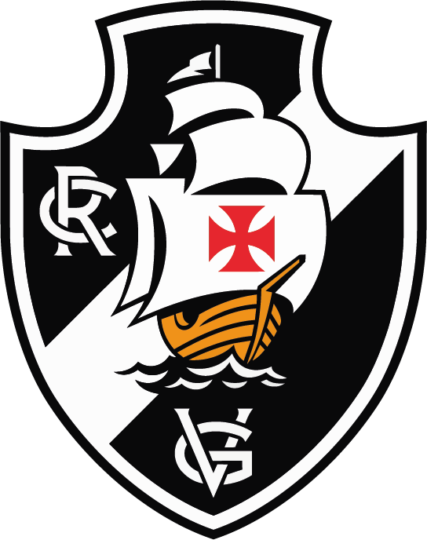
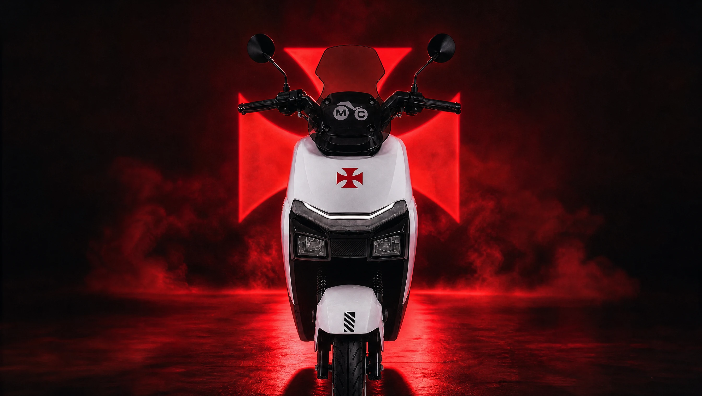
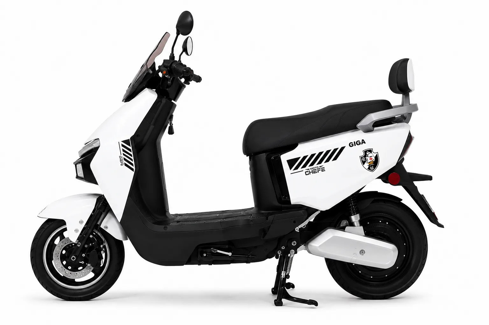
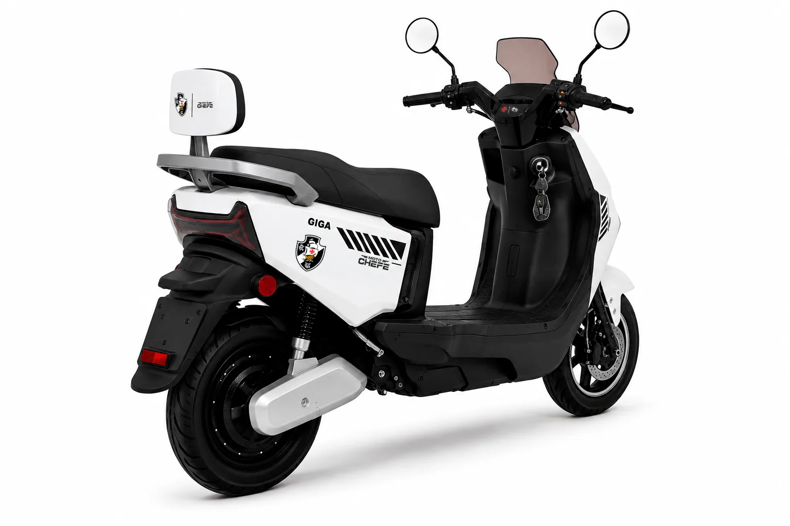
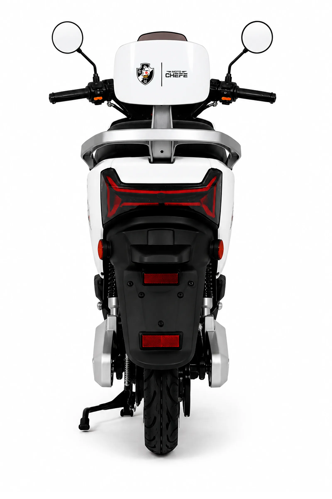
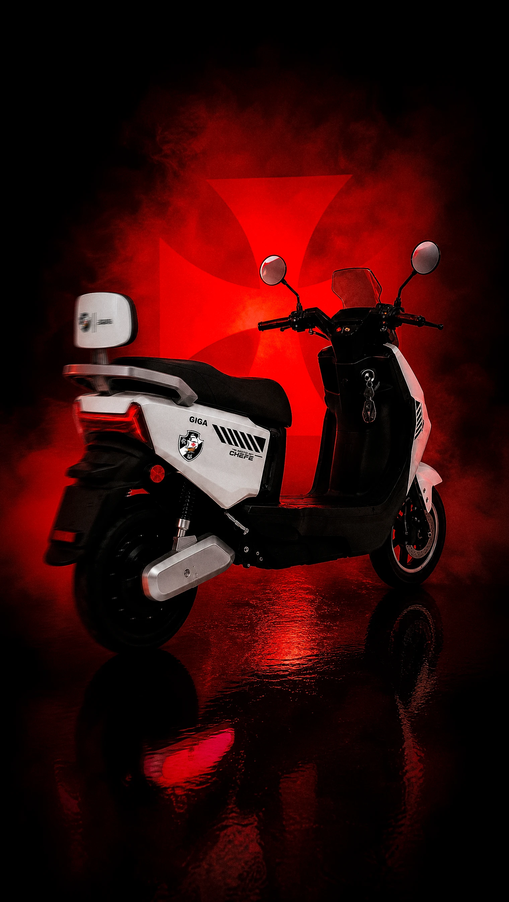

01
A CRUZ VAI NA FRENTE
A Cruz de Malta vermelha fica no painel frontal, acima do farol, no ponto mais alto, virada para o caminho. É exatamente onde ela ia: pintada na vela das naus, na frente, puxando o barco.

Entrar na listaCRVG × MotoChefe · Edição especial oficial · 212 unidades
A GIGA, edição especial oficial do Club de Regatas Vasco da Gama. A cruz vai na frente. Você vai atrás dela.
Pré-lançamento · Você preenche, a MotoChefe fala com você · Sem compromisso
Manifesto
NINGUÉM AQUI PEDIU LICENÇA.Não em 1898, pra fundar um clube de remo no bairro da Saúde.Não em 1924, pra não deixar ninguém de fora.Não em 1927, pra construir a própria casa com o próprio bolso.E não agora, pra atravessar a cidade.MEU VASCO SEMPRE SOUBE SE MOVER.
7 de abril de 1924. Ofício nº 261, assinado pelo presidente José Augusto Prestes: o Club de Regatas Vasco da Gama respondeu por escrito e desistiu de entrar na liga. A carta ficou conhecida como Resposta Histórica. Três anos depois, sem liga, a torcida tirou do bolso e ergueu São Januário em cerca de dez meses.
Desde 1898 atravessando. Agora com a rota do lado de fora.

O símbolo
Era a cruz pintada nas velas das naus que atravessaram o mar: ia na frente, puxando o barco. Virou escudo, virou hino, virou a pele de um clube fundado em 1898. Na GIGA, ela volta pro lugar de origem: o ponto mais alto, virada para o caminho.
A edição, de perto
A Cruz de Malta no ponto mais alto, virada para o caminho. O escudo nos dois flancos. A diagonal na mesma inclinação da rota do manto. Cinco detalhes desenhados a partir da simbologia do clube, um por um.
Freio a disco perfurado na dianteira · lanterna em LED · alça de apoio em alumínio · encosto para a garupa · assoalho plano · descanso central. A ficha técnica completa está mais abaixo nesta página.
No dia a dia
Domingo, qualquer paixão se explica sozinha. Isto aqui é o que ela faz nos outros seis dias.
Ela é 100% elétrica: você recarrega na tomada, não na bomba. O que você gasta hoje enchendo o tanque de uma moto vira uma fração disso na conta de luz.
Enquadrada como veículo autopropelido, ela dispensa habilitação, emplacamento, licenciamento anual e IPVA. Você compra, carrega e sai andando, sem uma única fila de despachante no meio.
A bateria é de Lítio Ferro Fosfato (LiFePO4) 60V 24A e removível: sai do veículo e carrega fora dele, em 110 ou 220, no carregador bivolt. Mora em apartamento, sem tomada na garagem? Tira a bateria, sobe com ela, carrega na sala. A moto fica lá embaixo.
Motor elétrico não tem escapamento, não tem ronco, não tem fumaça: zero emissão na rua. Você sai de casa de manhã sem acordar o quarteirão, e chega em qualquer lugar sem anunciar.
Ela é feita para o trecho que você faz todo dia: casa, trabalho, mercado, a rua do jogo. São 40 km de autonomia média, e ela passa onde carro não passa, para onde carro não para, e o trajeto que era um problema volta a ser um trajeto.



Nenhum desses cinco motivos exige que você seja vascaíno. O sexto exige, e é o único que a gente não precisa explicar.
Sem número inventado
Como veículo autopropelido, ela não exige CNH. Quem nunca tirou carteira, quem não quer moto, quem só precisa se mover: está resolvido.
Bateria de Lítio Ferro Fosfato (LiFePO4) 60V 24A, removível, que carrega fora do veículo com carregador bivolt. Sem puxar extensão pela janela, sem disputar tomada no prédio.
Nada de emplacamento, nada de licenciamento todo ano, nada de IPVA. O custo de andar não volta a te procurar em janeiro.
A edição especial Vasco da Gama é limitada a 212 unidades. Cruz de Malta no painel frontal, escudo nos dois flancos, encosto assinado e a diagonal correndo pelo para-lama: essa simbologia foi desenhada para esta edição, e ela termina nas 212.
Motor elétrico: nenhuma gota de combustível, nenhuma fumaça, nenhum ronco. Bom para a rua, bom para o vizinho, bom para quem sai às cinco da manhã.
A MotoChefe Brasil é patrocinadora oficial do Club de Regatas Vasco da Gama desde fevereiro de 2025. Esta edição nasce dessa parceria. Não é homenagem de terceiro.
Edição limitada a 212 unidades · A lista é atendida por ordem de chegada

Sábado de manhã. São Cristóvão acordando, o portão da rua ainda molhado. Você desce a Colina com a cruz vermelha na frente e a cidade abrindo. Ninguém buzina: não tem motor pra ouvir. Só o barulho da rua, e o seu.
No meio-fio, um cara de camisa negra levanta a mão. Você não conhece ele. Ele não conhece você. Mas os dois sabem exatamente a mesma coisa.
Não é sobre chegar mais rápido. É sobre chegar sendo reconhecido.
Galeria
Toque para ampliar. Fotos oficiais da edição especial.
Direto ao ponto
Não. A GIGA é enquadrada como veículo autopropelido, e é por isso que ela dispensa habilitação, emplacamento, licenciamento anual e IPVA. Os números explicam o enquadramento: 32 km/h de velocidade máxima e motor de 1000 W ficam dentro dos limites previstos para essa categoria. Na prática: você recebe, carrega e sai andando, sem despachante e sem fila. Pilote sempre com responsabilidade e equipamento de segurança, porque a ausência de exigência legal não muda o cuidado no trânsito.
A autonomia média é de 40 km por carga, com motor de 1000 W e velocidade máxima de 32 km/h. Como em qualquer veículo elétrico, o número que você faz no dia a dia varia com peso, relevo, pressão dos pneus e jeito de andar. A bateria é de Lítio Ferro Fosfato (LiFePO4) 60V 24A e o carregador é bivolt, então dá para carregar em 110 ou em 220. O tempo exato de recarga é informado no atendimento. E o melhor detalhe da bateria está na próxima resposta.
Sim. A bateria é de Lítio Ferro Fosfato (LiFePO4) 60V 24A e é removível: ela sai do veículo e carrega em qualquer tomada, fora dele, com carregador bivolt em 110 ou 220. É o detalhe que resolve a vida de quem mora em prédio sem tomada na garagem: você destrava, sobe com a bateria e deixa a moto embaixo. Nada de extensão pendurada na janela.
A edição especial Vasco da Gama é limitada a 212 unidades, e esta página é o lançamento dela. O caminho é curto: você preenche o formulário e a conversa continua no WhatsApp, onde o atendimento passa as condições, as formas de pagamento e o passo a passo para levar a sua. O valor não está publicado aqui porque essa informação vem no atendimento, e não em letra miúda. Preencher leva menos de um minuto, não compromete você a nada e coloca seu nome na ordem em que os cadastros chegam.
Sim, é uma edição especial oficial, nascida da parceria entre o Club de Regatas Vasco da Gama e a MotoChefe Brasil, patrocinadora oficial do clube desde fevereiro de 2025. É essa parceria que permite o escudo, a Cruz de Malta e os demais símbolos do CRVG no produto, com uso autorizado pelo clube. É também o que explica a simbologia estar nos lugares onde ela significa alguma coisa, e não em qualquer lugar.
Sim. Além da garantia legal prevista no Código de Defesa do Consumidor, a GIGA tem a garantia de fábrica MotoChefe. Prazo e itens cobertos são apresentados pelo atendimento antes de qualquer fechamento, nunca depois.
A disponibilidade e o prazo variam de região para região, e quem passa o cenário da sua é o atendimento. Por isso o formulário pede cidade e estado: assim a conversa no WhatsApp já começa com a informação certa para onde você está, em vez de uma média nacional que não serve para ninguém.
A MotoChefe Brasil é a fabricante da linha de veículos elétricos que inclui a GIGA, e é patrocinadora oficial do Club de Regatas Vasco da Gama desde fevereiro de 2025. É ela quem produz, garante e entrega esta edição especial, e é a equipe dela que continua a conversa com você no WhatsApp.
Ficha técnica
Os números oficiais da MotoChefe, sem estimativa e sem arredondamento.
32km/h
Velocidade máxima
É o teto previsto para o autopropelido, e é o que mantém a GIGA livre de CNH.
1000W
Potência do motor
Mil watts para o trecho urbano de todo dia, com garupa e com o baú cheio.
40km
Autonomia média
40 km de média por carga. O número do seu dia varia com peso, relevo e jeito de andar.
Especificações oficiais da MotoChefe. A autonomia média e a velocidade máxima variam conforme peso, relevo, pressão dos pneus e condução.
Edição limitada · 212 unidades
A edição é limitada a 212 unidades e a lista é atendida por ordem de chegada. Preencha aqui e a conversa continua no WhatsApp, com as condições e o caminho certo para garantir a sua.
Sem cobrança agora · Sem cartão · Sem compromisso de compra · Atendimento oficial da MotoChefe
Seu cadastro entrou na fila das 212 unidades. O atendimento da MotoChefe continua a conversa pelo WhatsApp que você cadastrou. A rota já está traçada. CASACA!
Continuar no WhatsAppCASACA!
Você já viu a cruz na frente, já sabe que não precisa de CNH e já entendeu que a bateria sobe com você. Falta o seu nome na lista.
Quero a minha GIGA do VascoUm minuto pra preencher. A rota é sua desde 1898.